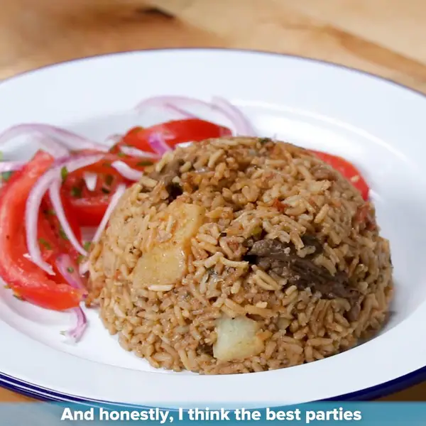

How To Cook The Best Pilau

Recipe Description
Pilau Pro is a meat-loving dish that is made with the finest ingredients in the world.
Ingredients
Steps Pilau
- Wash the rice under cold water until the water runs clear.
- Soak the rice in water for about 30 minutes to soften.
- Chop onions, garlic, and ginger finely.
- Heat oil in a cooking pot over medium heat.
- Add whole spices like cinnamon, cardamom, and cloves to the hot oil and sauté until fragrant.
- Add chopped onions, garlic, and ginger to the pot and sauté until golden brown.
- Add chopped tomatoes and cook until they soften.
- Drain the soaked rice and add it to the pot, stirring to coat the rice with the onion-tomato mixture.
- Add water or broth to the pot, along with salt, turmeric, cumin, and other spices according to taste.
- Bring the mixture to a boil, then reduce the heat to low, cover the pot, and simmer until the rice is cooked and the liquid is absorbed.
- Once cooked, fluff the pilau with a fork and let it rest for a few minutes before serving.
- Garnish with fresh cilantro or mint leaves before serving, if desired.
- Serve the pilau hot with your favorite accompaniments and enjoy!